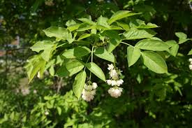

Staphyleaceae
Bladdernut Family
The Staphyleaceae is a small family of deciduous shrubs and trees, commonly known as the Bladdernut family. They are typically recognized by their opposite, pinnately compound leaves and, particularly in the genus Staphylea, their distinctive inflated, bladder-like capsule fruits. The family is primarily distributed in temperate regions of the Northern Hemisphere.
Overview
Staphyleaceae is a family belonging to the order Crossosomatales within the Rosid clade of eudicots. It comprises about 3-5 genera (depending on classification) and around 40-60 species of shrubs and trees. The most well-known genus is Staphylea, the bladddernuts, named for their unique inflated capsular fruits.
Members of the family are found predominantly in temperate regions of North America and Eurasia, with some representation in Central and South America and Southeast Asia. They typically inhabit woodlands, forests, and thickets. Several species, particularly of Staphylea, are cultivated as ornamental plants for their attractive flowers, interesting fruits, and sometimes striped bark.
Quick Facts
- Scientific Name: Staphyleaceae Martinov
- Common Name: Bladdernut Family
- Number of Genera: Approximately 3-5 (e.g., Staphylea, Euscaphis, Turpinia)
- Number of Species: Approximately 40-60
- Distribution: Primarily Northern Hemisphere temperate regions; also Central/South America and Southeast Asia.
- Evolutionary Group: Angiosperms - Eudicots - Rosids - Crossosomatales
Key Characteristics
Growth Form and Habit
Plants are deciduous (rarely evergreen) shrubs or small to medium-sized trees.
Leaves
Leaves are typically arranged oppositely along the stem (rarely alternate). They are usually pinnately compound, most commonly with 3 leaflets (trifoliolate) or sometimes 5 or 7 leaflets (Staphylea, Turpinia, Euscaphis). Rarely, leaves can be simple (Huertea, sometimes placed here). Leaflets are generally ovate to elliptic with serrated margins. Stipules (small appendages at the petiole base) are often present and can be small or relatively large.
Inflorescence
Flowers are borne in terminal or axillary inflorescences, typically branched clusters such as panicles or racemes, which are often drooping or spreading.
Flowers
Flowers are usually bisexual (perfect), though sometimes functionally unisexual, and typically radially symmetrical (actinomorphic). They are generally 5-merous. The sepals (5) are often similar in color and texture to the petals. The petals (5) are usually separate, white, cream, or yellowish, often somewhat erect. There are 5 stamens, alternating with the petals, arising from or near a nectar disk which is often present inside the base of the stamens. The ovary is typically superior (or sometimes partly inferior), composed of 2-3(-4) carpels that may be fused only at the base or more completely united. Styles are usually separate or fused only partially.
Fruits and Seeds
The fruit type is variable and characteristic of the genera. In the most familiar genus, Staphylea, the fruit is a distinctive inflated, papery, bladder-like capsule, typically with 2 or 3 lobes, which eventually opens at the apex to release seeds. In other genera like Turpinia and Euscaphis, the fruit is fleshy, resembling a berry or drupe, and does not inflate. Seeds are usually few per carpel/lobe, often rounded, hard-coated, and shiny, sometimes possessing an aril (a fleshy appendage).
Field Identification
Identifying Staphyleaceae often relies on recognizing the combination of opposite, compound leaves and the characteristic fruit type:
Primary Identification Features
- Opposite, Pinnately Compound Leaves: Usually with 3 or 5 serrated leaflets (check for opposite arrangement carefully).
- Inflated, Bladder-like Capsule Fruit: Diagnostic for the common genus Staphylea.
- Shrub or Small Tree Habit: Woody plants of relatively small stature.
- Flower Clusters: Panicles or racemes of small, 5-merous, white/yellowish flowers.
Secondary Identification Features
- Serrated Leaflet Margins: Most species have toothed leaflets.
- Superior Ovary (usually): Flowers have ovary positioned above sepals/petals.
- 5 Stamens: Consistent number of stamens.
- Shiny, Hard Seeds: Often visible within opened capsules or fleshy fruits.
- Stipules Present: Small appendages may be visible at the base of the leaf petiole.
Seasonal Identification Tips
- Late Summer/Fall/Winter: The inflated capsules of Staphylea are most conspicuous and often persist after leaves have fallen.
- Spring/Early Summer: Look for drooping clusters of white/yellowish flowers.
- Growing Season: Opposite, pinnately compound leaves are key vegetative features.
Common Confusion Points
- Acer negundo (Box Elder Maple): Has opposite, pinnately compound leaves (usually 3-5 leaflets), but is a larger tree with very different inconspicuous flowers and winged fruits (samaras).
- Sambucus (Elderberry - Adoxaceae): Also shrubs with opposite, pinnately compound leaves and white flower clusters. Differ in having typically flat-topped flower clusters (corymbs) and small, berry-like drupes (not inflated capsules). Stems often pithy.
- Fraxinus (Ash - Oleaceae): Trees with opposite, pinnately compound leaves, but flowers are usually inconspicuous (wind-pollinated, often lacking petals) and fruit is a single-winged samara.
- Aesculus (Buckeyes - Sapindaceae): Have opposite leaves, but they are palmately compound (leaflets radiate from one point). Flowers are large and showy, fruit is a large leathery capsule.
Field Guide Quick Reference
Look For:
- Shrub or small tree
- Leaves opposite, pinnately compound (3-5 leaflets)
- Leaflets usually serrated
- Flowers small, 5-merous, in panicles/racemes
- Fruit an inflated capsule (Staphylea) or fleshy
Key Variations:
- Genera Staphylea, Euscaphis, Turpinia
- Fruit type varies by genus
- Mostly N. Hemisphere temperate
Notable Examples
The genus Staphylea is the most commonly encountered member of the family.

Staphylea trifolia
American Bladdernut
A deciduous shrub or small tree native to eastern North America, often found in moist woodlands and along streams. It has opposite leaves with three serrated leaflets. Produces drooping clusters of bell-shaped, greenish-white flowers in spring, followed by the characteristic 2-3 lobed, inflated, papery capsules (about 1-2 inches long) that persist into fall.

Staphylea pinnata
European Bladdernut
Native to central and southern Europe. Similar to S. trifolia but often has 5-7 leaflets instead of 3. Produces panicles of white, fragrant flowers followed by inflated capsules. Sometimes cultivated as an ornamental.

Euscaphis japonica
Korean Sweetheart Tree
Native to East Asia (China, Korea, Japan). A small deciduous tree or large shrub with opposite, pinnately compound leaves (usually 5-9 leaflets). Produces upright panicles of small yellowish-white flowers. The fruit is not an inflated capsule but rather fleshy, reddish follicles that split open to reveal shiny black seeds. Sometimes placed in its own family Euscaphiaceae.
Phylogeny and Classification
Staphyleaceae is placed within the small order Crossosomatales, which belongs to the large Rosid clade of eudicots. The Crossosomatales order is somewhat enigmatic, containing only a handful of small families (Staphyleaceae, Stachyuraceae, Crossosomataceae, Guamatelaceae, Aphloiaceae, Geissolomataceae, Strasburgeriaceae) that are morphologically quite diverse and often have restricted or disjunct distributions. The relationships among these families and the exact position of Crossosomatales within the Rosids are still areas of active research.
Historically, Staphyleaceae was sometimes placed near Sapindales due to superficial similarities in compound leaves, but molecular data firmly places it in Crossosomatales.
Position in Plant Phylogeny
- Kingdom: Plantae
- Clade: Angiosperms
- Clade: Eudicots
- Clade: Rosids
- Order: Crossosomatales
- Family: Staphyleaceae
Evolutionary Significance
The Staphyleaceae family is significant for:
- Representing the Order Crossosomatales: Being one of the more widespread and species-rich families in this small, phylogenetically somewhat isolated order.
- Unique Fruit Evolution: The development of the inflated, bladder-like capsule in Staphylea is a distinctive evolutionary specialization, likely related to seed dispersal (wind or water).
- Biogeography: Its disjunct distribution across Northern Hemisphere temperate zones and extending into some tropical areas provides clues about past connections and climate history.
- Phylogenetic Relationships: Helping to understand the broader relationships within the Rosid clade, particularly the placement and composition of the Crossosomatales order.